Pokémon in the NYPL archives
2018-5-18 18:10:13
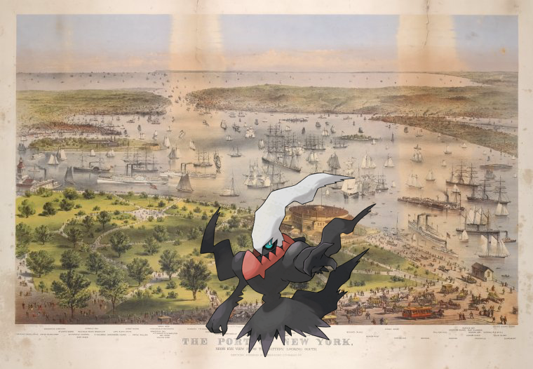
Darkrai ;
The Port of New York, bird's eye view from the Battery, looking south
2018-5-18 16:10:04
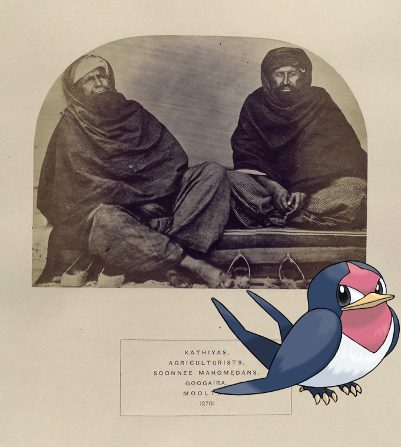
Taillow |
Kathiyas, agriculturists, Soonnee Mahomedans, Googaira, Mooltan.
!
2018-5-18 14:10:04
Teddiursa +
LUNCHEON [held by] U.S.M.S ST. PAUL [at] EN ROUTE (SS;)
2018-5-18 12:10:04
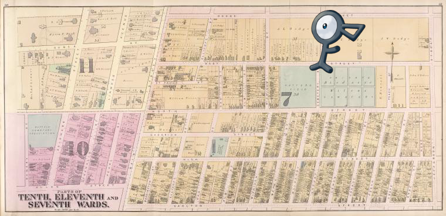
|
Parts of Tenth, Eleventh, and Seventh Wards.
!
2018-5-18 10:10:07
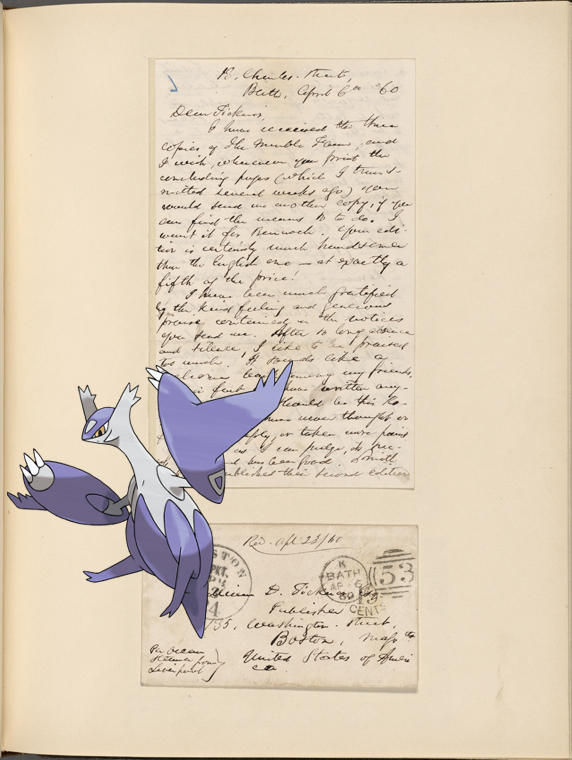
Latias on
Ticknor, [William D.], ALS to. Apr. 6, 1860.
2018-5-18 08:10:13
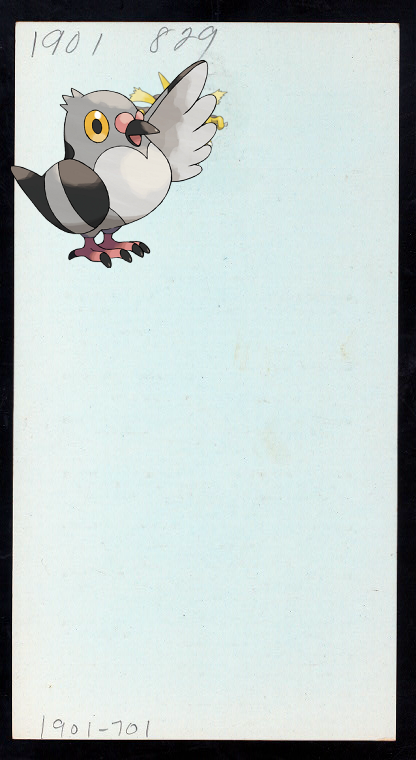
Alakazam, Pidove ;
LUNCHEON [held by] HOTEL ALCAZAR [at] "ST. AUGUSTINE, FL" (HOTEL;)
!
2018-5-18 06:10:13
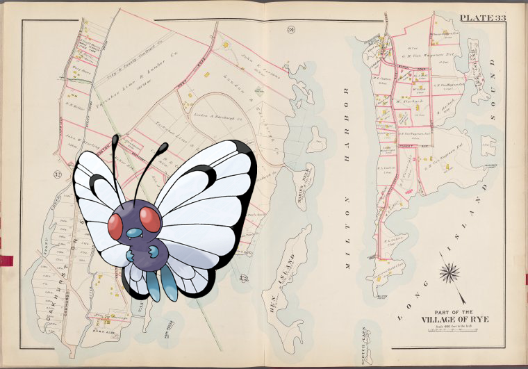
Butterfree ;
Westchester, V. 1, Double Page Plate No. 33 [Map bounded by Long Island Sound, Milton Harbor, Oakhurst Ave.]
2018-5-18 04:10:04
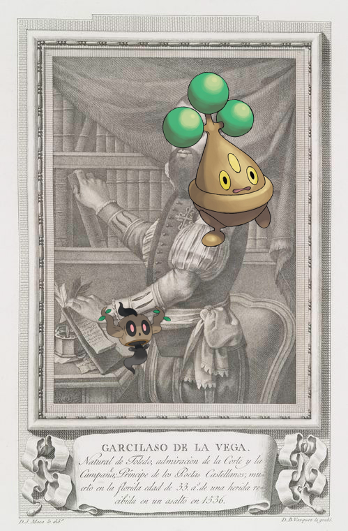
Bonsly, Phantump on
Garcilaso de la Vega.
.
2018-5-18 02:10:03
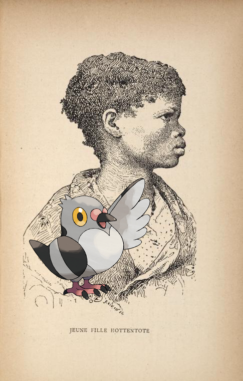
Pidove –
Jeune fille Hottentote.
.
2018-5-18 00:10:06
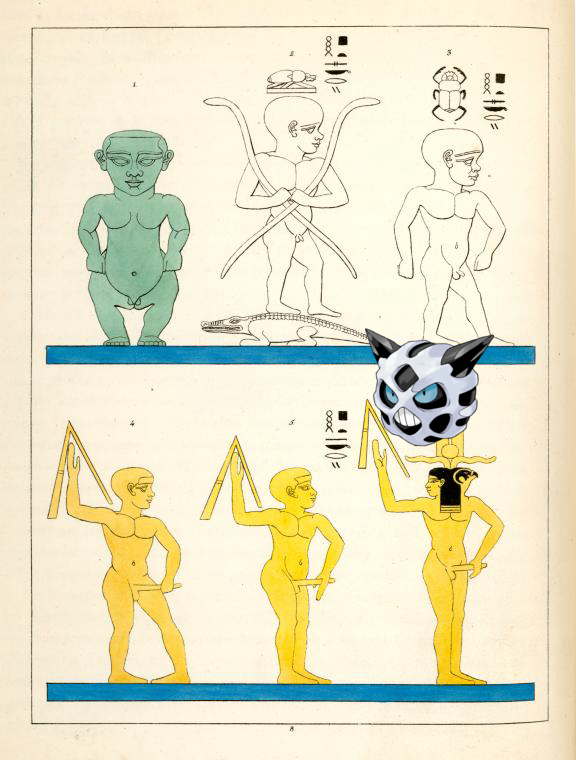
Glalie on
Phtah- Sokari [Ptah-Sokaris]. (Phtha enfant, Héphaistus, Harpoctare.)
2018-5-17 22:10:03
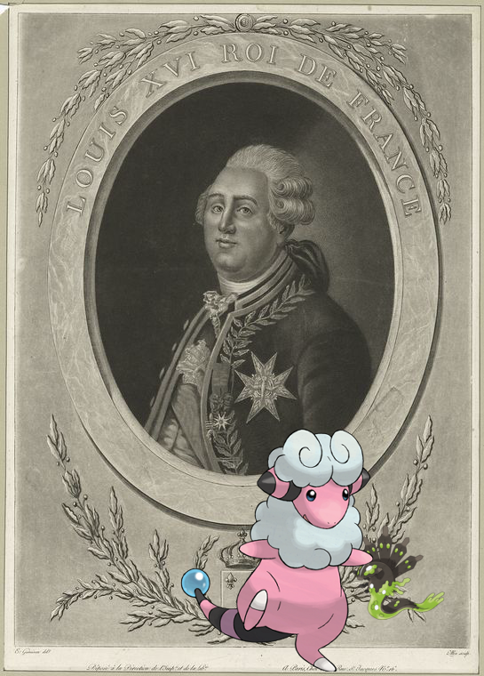
Zygarde, Flaaffy ;
Louis XVI Roi de France
2018-5-17 20:10:14
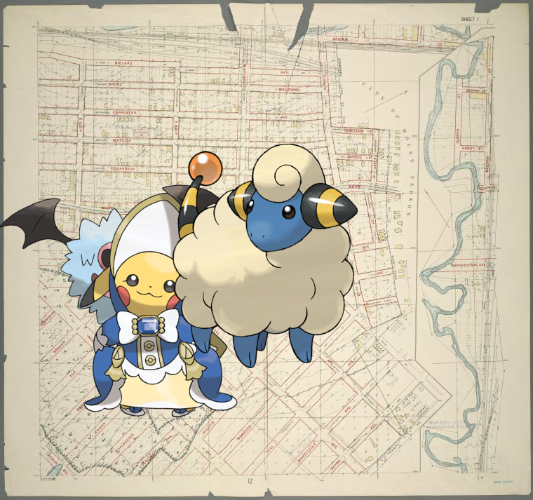
Woobat, , Mareep @
Sheet 1: Grid #6000E - 12000E, #15000N - 19000N. [Includes Bronx River, Monticello Avenue, from Seton Avenue to E. 243rd Street and the Northern boundary of the City of New York.]
.
2018-5-17 18:10:04
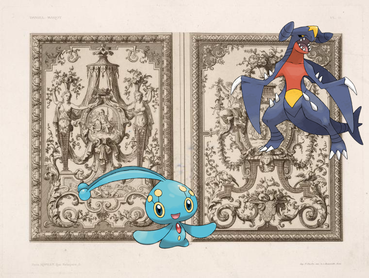
Garchomp, Manaphy on
[Two designs; one with roundel of enthroned Athena, one with bible scene.]
2018-5-17 16:10:04
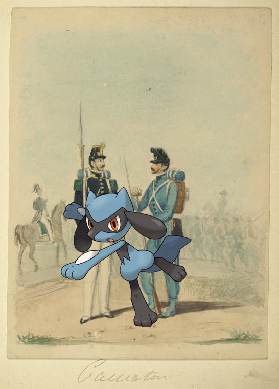
Riolu +
Italy. Kingdom of the Two Sicilies, 1859.
2018-5-17 14:10:04
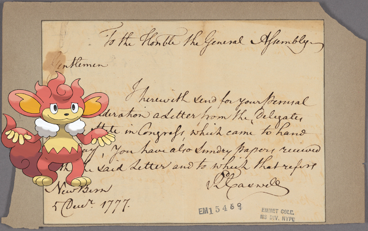
Simisear ;
Letter to the General Assembly [of North Carolina]
!
2018-5-17 12:10:05
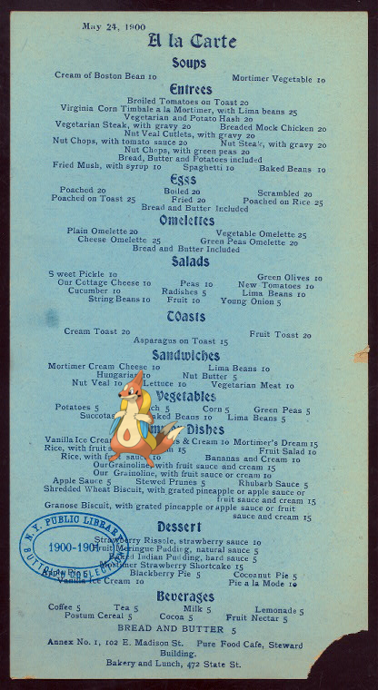
Floatzel +
A LA CARTE MENU [held by] PURE FOOD CAFE [at] 102 MADISON ST. ? (REST;)
.
2018-5-17 10:10:09
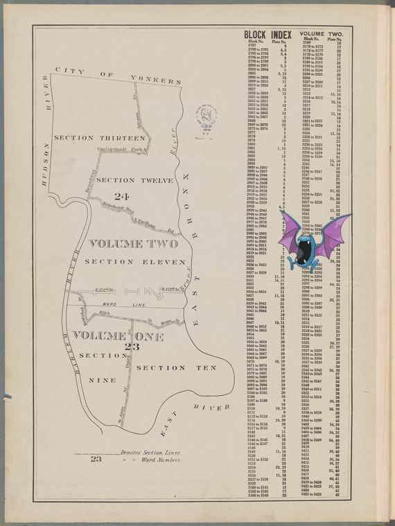
Golbat @
Block Index. Volume Two
2018-5-17 08:10:04
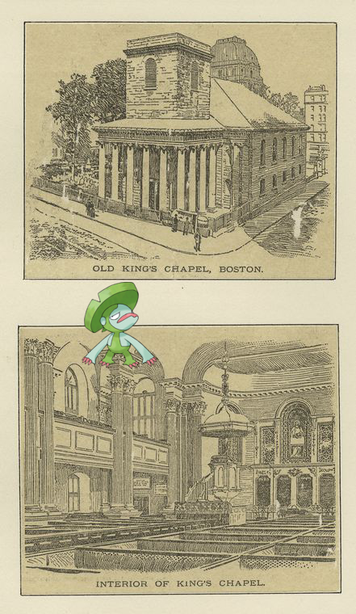
Lombre |
Old King's Chapel, Boston; Interior of King's Chapel
!
2018-5-17 06:10:03
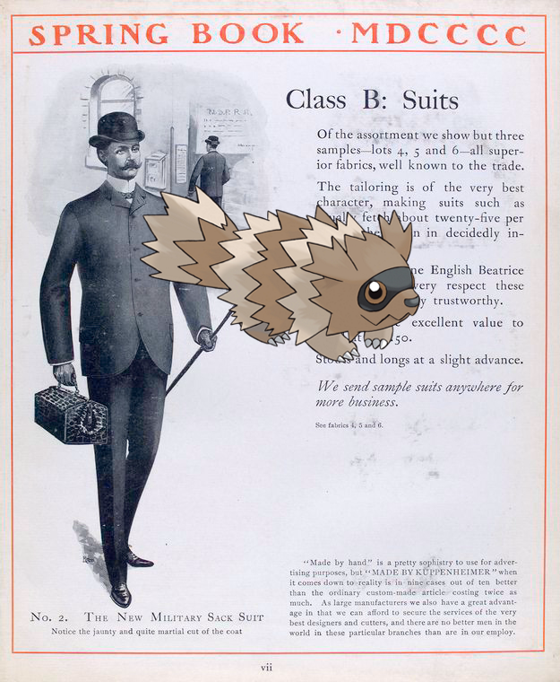
Zigzagoon +
Class B: suits; No. 2. The new Military sack suit.
.
2018-5-17 04:10:04
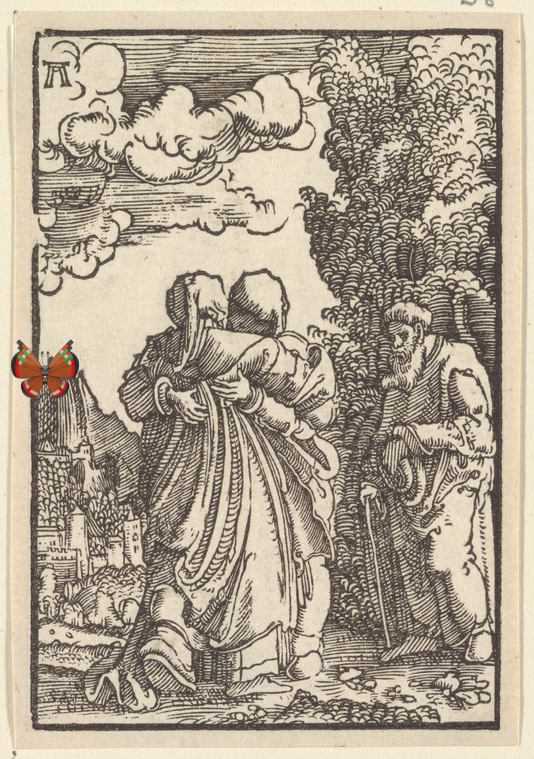
;
Visitation
2018-5-17 02:10:05
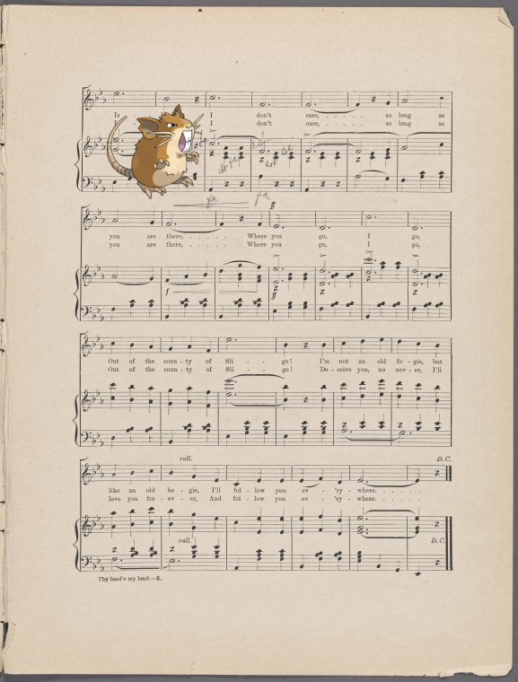
Raticate |
Sligo [or] Thy land's my land
!
2018-5-17 00:10:03
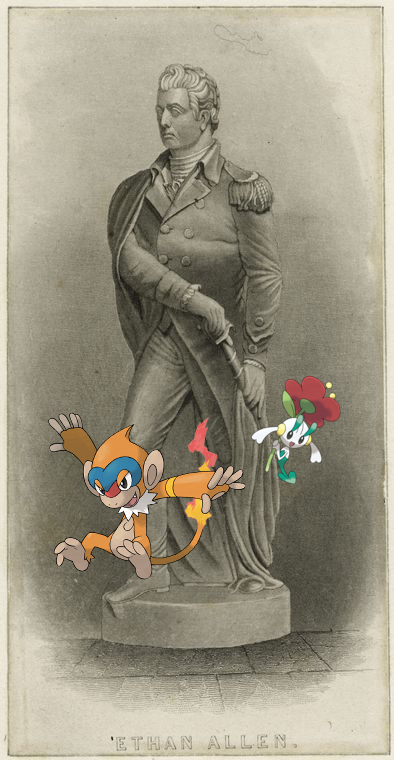
Monferno, Floette ;
Ethan Allen.
!
2018-5-16 22:10:07
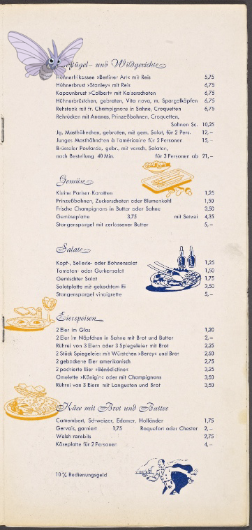
Venomoth +
Hotel Berlin
!
26
|
25
|
24
|
23
|
22
|
21
|
20
|
19
|
18
|
17
|
16
|
15
|
14
|
13
|
12
|
11
|
10
|
9
|
8
|
7
|
6
|
5
|
4
|
3
|
2
|
1
|
0